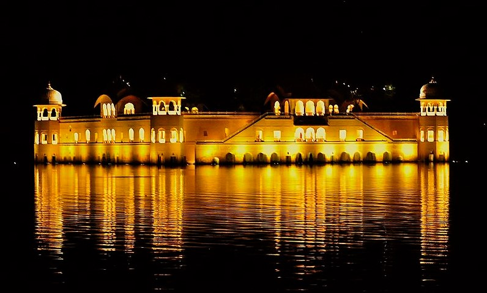

Jaipur
Founded in AD 1727 by Maharaja Sawai Jai Singh II, Jaipur, the capital of Rajasthan is
popularly known as the Pink City. With broad avenues and spacious gardens, the city is steeped in history and
culture. Here the past comes alive in magnificent forts and palaces, blushed pink, where once lived the maharajas.
The bustling bazaars of Jaipur, famous for Rajasthan jewellery, fabric and shoes, possess a timeless quality and
are a treasure-trove for the shoppers.
Planned by Vidyadhar Bhattacharya, Jaipur holds the distinction of being the first planned city of India.
Renowned globally for its coloured gems, the capital city of Rajasthan combines the allure of its ancient history
with all the advantages of a metropolis. Jaipur rises up majestically against the backdrop of the forts Nahargarh,
Jaigarh and Garh Ganesh Temple. The bustling modern city is one of the three corners of the golden triangle that
includes Delhi, Agra and Jaipur.
The story goes that in 1876, the Prince of Wales visited India on a tour. Since the colour pink was symbolic of
hospitality, Maharaja Ram Singh of Jaipur painted the entire city pink. The pink that colours the city makes for a
marvellous spectacle to behold.
Major Attractions:
Hawa Mahal
In 1799, the Kachhwaha Rajput ruler, Sawai Pratap Singh, grandson of Maharaja Sawai Jai Singh ordered Lal Chand
Usta to construct an extension to the Royal City Palace. The Purdah system at the time was strictly followed.
Rajput royal ladies should not be seen by strangers or appear in any public area. The construction of Hawa Mahal
allows the royal ladies to enjoy from every day street scenes to royal processions on the street without being
seen.
Albert Hall
The Albert Hall Museum in Jaipur, is the oldest museum of the state and functions as the state museum of Rajasthan, India.
The building is situated in Ram Niwas garden outside the city wall opposite New gate and is a fine example of Indo-Saracenic architecture.
It is also called the Government Central Museum.

Amer Fort
Amer Fort or Amber Fort is a fort located in Amer, Rajasthan, India. Amer is a town with an area of 4 square kilometres (1.5 sq mi) located 11 kilometres (6.8 mi) from Jaipur,
the capital of Rajasthan.
The town of Amer and the Amber Fort were originally built by Raja Man Singh and additions were, later, made by Sawai Jai Singh. Located high on a hill,
it is the principal tourist attraction in Jaipur.
Jal Mahal
Jal Mahal (meaning "Water Palace") is a palace in the middle of the Man Sagar Lake in Jaipur city, the capital of the state of Rajasthan, India.
The palace was originally constructed in 1699; the building and the lake around it were later renovated and enlarged in the 18th century by Maharaja Jai Singh II of Amber.

❮
❯